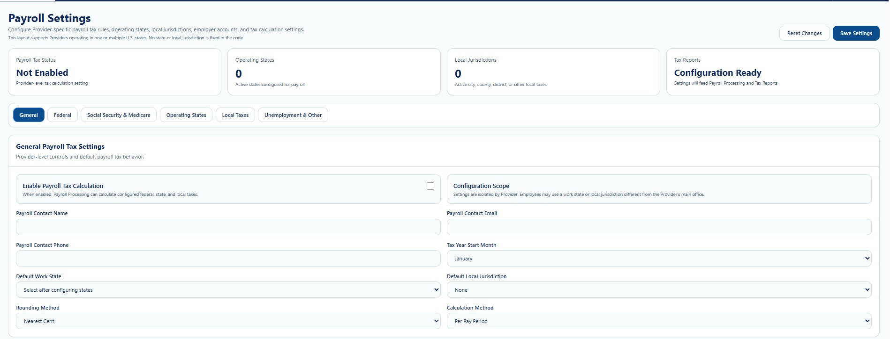
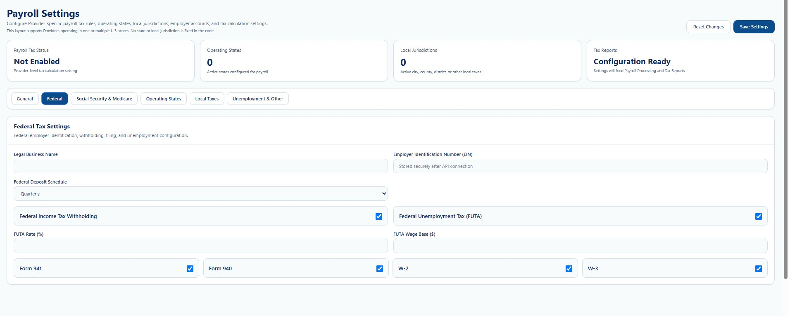
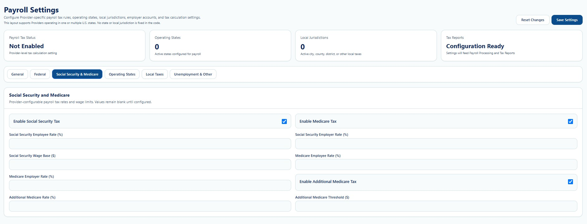
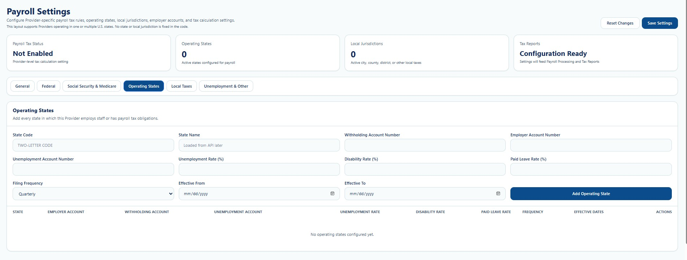
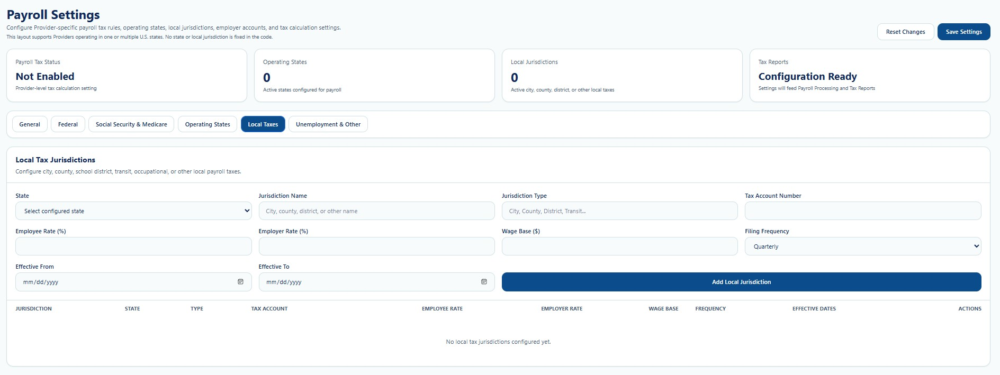
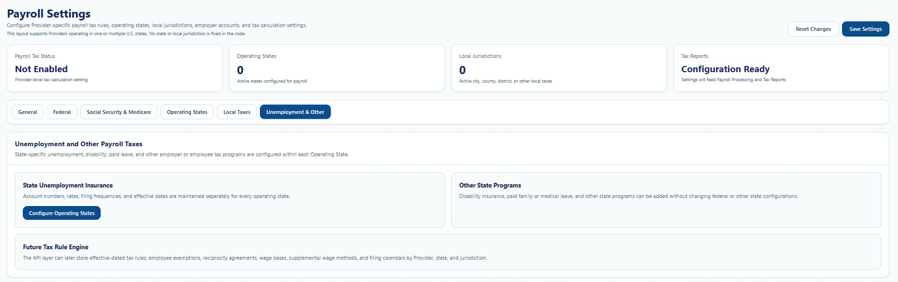

PAYROLL • PROVIDER CONFIGURATION
Payroll Settings
Configure general, federal, Social Security, Medicare, state, local, unemployment, and other payroll-tax settings.
Payroll pages may contain employee identity data, compensation rates, tax settings, bank-account metadata, payroll totals, and reporting information. Screenshots in this public guide use redacted or demonstration information. Access must be role-based, logged, and limited to the minimum information required for payroll, HR, finance, compliance, or authorized management duties.
True Care System provides configurable payroll workflows and reporting tools. Providers remain responsible for verifying current federal, state, and local tax rules, wage-and-hour requirements, overtime rules, filing obligations, banking requirements, employee classifications, and payroll outputs with qualified payroll, tax, legal, or accounting professionals.
Purpose
Payroll Settings configures Provider-specific payroll tax behavior. The page supports Providers operating in one or multiple U.S. states and does not hard-code one state or local jurisdiction into the layout.

Page-Level Controls
| Field or Control | Function |
|---|---|
| Reset Changes | Discards unsaved edits and returns fields to their last loaded values. |
| Save Settings | Saves the Provider payroll configuration. |
| Payroll Tax Status | Shows whether Provider-level payroll tax calculation is enabled. |
| Operating States | Counts configured states where the Provider employs staff or has payroll obligations. |
| Local Jurisdictions | Counts configured city, county, district, transit, occupational, or other local taxes. |
| Tax Reports | Shows whether settings are ready to feed Payroll Processing and Tax Reports. |
General Tab
| Field or Control | Function |
|---|---|
| Enable Payroll Tax Calculation | Allows Payroll Processing to calculate configured federal, state, and local taxes after the calculation layer is connected. |
| Payroll Contact Name / Email / Phone | Stores the Provider authorized payroll contact. |
| Tax Year Start Month | Defines the default tax-year starting month. |
| Default Work State | Selects a default after operating states are configured. |
| Default Local Jurisdiction | Selects the standard local jurisdiction when applicable. |
| Rounding Method | Controls supported monetary rounding behavior. |
| Calculation Method | Defines whether calculation is performed per pay period or another supported method. |
Federal Tab

| Field or Control | Function |
|---|---|
| Legal Business Name | Provider legal employer name. |
| Employer Identification Number (EIN) | Federal employer identifier stored securely after API connection. |
| Federal Deposit Schedule | Stores the configured federal deposit frequency. |
| Federal Income Tax Withholding | Enables the federal withholding path. |
| Federal Unemployment Tax (FUTA) | Enables FUTA configuration. |
| FUTA Rate / Wage Base | Stores the configured percentage and wage limit. |
| Form 941 / Form 940 / W-2 / W-3 | Tracks federal filing and reporting outputs. |
Social Security & Medicare Tab

| Field or Control | Function |
|---|---|
| Enable Social Security Tax | Activates Social Security tax configuration. |
| Employee / Employer Social Security Rate | Stores the employee and employer percentages. |
| Social Security Wage Base | Stores the annual wage limit. |
| Enable Medicare Tax | Activates Medicare tax configuration. |
| Employee / Employer Medicare Rate | Stores configured Medicare percentages. |
| Enable Additional Medicare Tax | Activates the additional Medicare path when applicable. |
| Additional Medicare Rate / Threshold | Stores the configured percentage and wage threshold. |
Operating States Tab

| Field or Control | Function |
|---|---|
| State Code / State Name | Identifies the operating state. |
| Withholding Account Number | Provider state withholding account. |
| Employer Account Number | Provider state employer account. |
| Unemployment Account Number / Rate | State unemployment account and configured rate. |
| Disability Rate / Paid Leave Rate | Configured state disability and paid-leave percentages. |
| Filing Frequency | Stores the selected state filing cadence. |
| Effective From / Effective To | Controls the period in which the state configuration is valid. |
| Add Operating State | Adds the completed state configuration. |
Local Taxes Tab

| Field or Control | Function |
|---|---|
| State | Selects a configured operating state. |
| Jurisdiction Name / Type | Identifies the local taxing authority and category. |
| Tax Account Number | Provider account with the local jurisdiction. |
| Employee Rate / Employer Rate | Stores employee-side and employer-side percentages. |
| Wage Base | Stores an applicable wage limit. |
| Filing Frequency | Stores the local filing cadence. |
| Effective From / Effective To | Controls the configuration effective period. |
| Add Local Jurisdiction | Adds the jurisdiction to the Provider list. |
Unemployment & Other Tab

| Field or Control | Function |
|---|---|
| State Unemployment Insurance | Uses each Operating State to maintain account numbers, rates, filing frequency, and effective dates. |
| Configure Operating States | Opens the state configuration workflow. |
| Other State Programs | Supports disability insurance, paid family or medical leave, and other state programs. |
| Future Tax Rule Engine | Describes future API-supported effective-dated rules, exemptions, reciprocity, wage bases, supplemental wage methods, and filing calendars. |